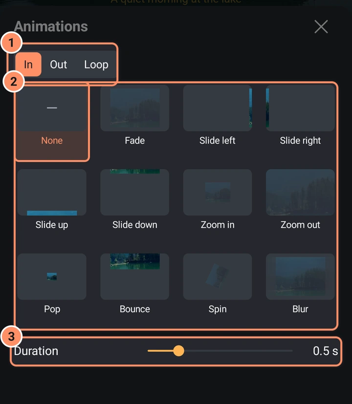
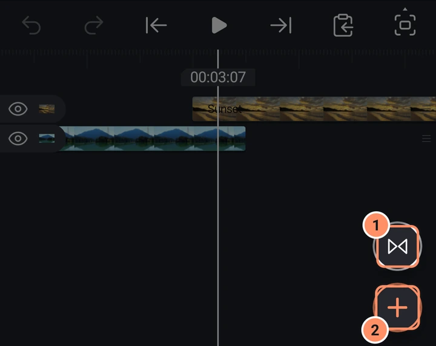
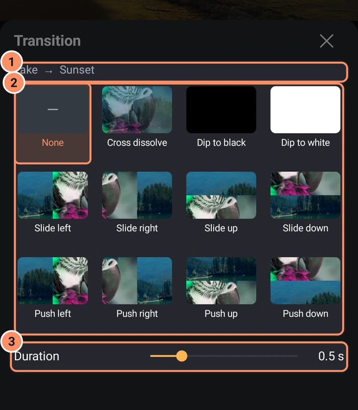
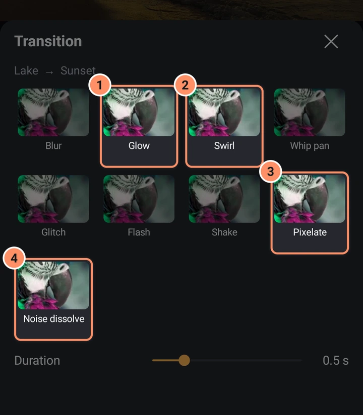

Geçişler ve animasyonlar
Klipler arasında tek dokunuşla geçişler ve herhangi bir katman için Giriş, Çıkış ve Döngü animasyonları.
Her ikisi de sonradan düzenleyebileceğiniz sıradan anahtar kareler ve efektler yazar, böylece bunları başlangıç noktası olarak kullanabilirsiniz.
Giriş, Çıkış ve Döngü animasyonları
- Görsel bir katman seçin (ses, kamera veya boş nesne değil).
- Önizlemenin sağ alt köşesindeki yuvarlak Animate düğmesine dokunun. Animations sayfası açılır.
- Üstten In, Out veya Loop seçin, ardından bir kutucuk seçin. None ızgarada ilk sıradadır.
- Duration değerini ayarlayın.


| Animasyonlar | Süre | |
|---|---|---|
| In ve Out | Fade, Slide left, Slide right, Slide up, Slide down, Zoom in, Zoom out, Pop, Bounce, Spin, Blur | 0.1 ila 2 saniye (varsayılan 0.5) |
| Loop | Pulse, Wobble, Float, Rotate | 0.2 ila 4 saniye (varsayılan 1) |
Bir In animasyonu klibin başına, bir Out animasyonu sonuna yerleştirilir ve bir Loop animasyonu tüm klip boyunca çalışır. Klibin o ucunda zaten bir geçiş varsa, bir animasyon seçmek onu değiştirir ve sayfa bunu belirtir.
İki klip arasında geçişler
Bir geçiş, bir klibi bir sonrakine karıştırır. İkincisinin birinciden daha sonra başlayıp bittiği iki görsel klibe ihtiyaç duyarlar.
- İki klibi birbirine değecek veya üst üste gelecek şekilde yerleştirin. Hiçbir şey seçili değilken, oynatma başlığı kesim noktasındayken zaman çizelgesi alanının sağ alt köşesinde, + düğmesinin hemen üstünde yuvarlak bir Geçiş düğmesi görünür. Veya iki klibi seçin ve alttaki çubukta Add a transition between the two clips seçeneğine dokunun.
- Transition sayfası "Clip A to Clip B" ve None ilk sırada olacak şekilde bir geçiş ızgarası gösterir.
- Birini seçin ve Duration değerini ayarlayın (0.1 ila 2 saniye, varsayılan 0.5).


Mevcut geçişler: Çapraz eritme, Siyaha geçiş, Beyaza geçiş, Sola kaydır, Sağa kaydır, Yukarı kaydır, Aşağı kaydır, Sola it, Sağa it, Yukarı it, Aşağı it, Sağa süpür, Sola süpür, Yukarı süpür, Aşağı süpür, Dairesel süpürme, Yakınlaştır, Uzaklaştır, Dönüş, Bulanıklaştırma, Parlama, Girdap, Hızlı pan, Glitch, Flaş, Sarsıntı, Pikselleştir ve Gürültüyle geçiş. İtme, yakınlaştırma, uzaklaştırma ve dönüşte hareket bulanıklığı vardır. Izgara kaydırılır: son geçişleri görmek için yukarı kaydırın.

Klipler yeterince üst üste gelmiyorsa, uygulama onları taşır veya kısaltır ve size örneğin "Moved ... earlier so the clips overlap." ve "Shortened to 0.5 s to fit the clips." gibi bildirir. Ses, kamera ve boş nesne katmanlarında geçiş olamaz.
Geçiş düğmesini yolunuzdan çekmek için onu yana, ekranın kenarına doğru kaydırın; oynatma başlığını hareket ettirdiğinizde geri gelir. Ayarlar > Editör > Önizlemede geçiş düğmesi onu önizlemenin sol altına taşır.
Kendinizinkini yapın
Bir efekt, bir Move efekti veya bir dizi anahtar kare aynı işi daha fazla kontrolle yapar. Beğendiğiniz bir görünümü yeniden kullanmak için ön ayar olarak kaydedin: bkz. Assets, templates and presets.